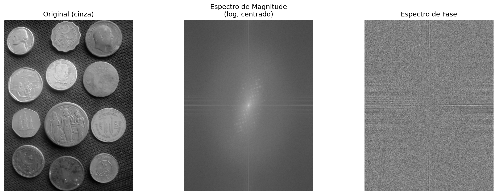
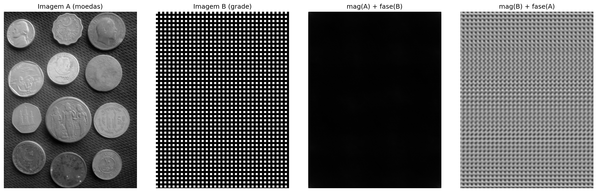
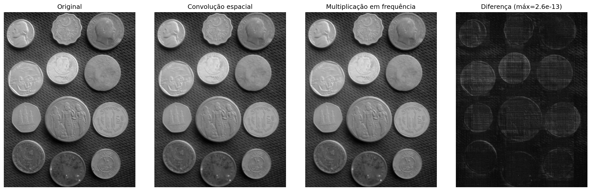
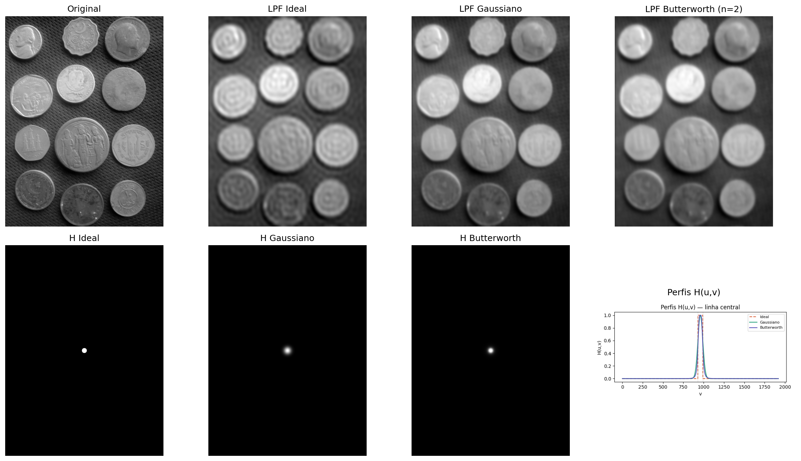
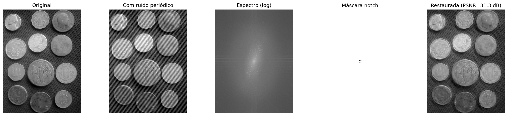
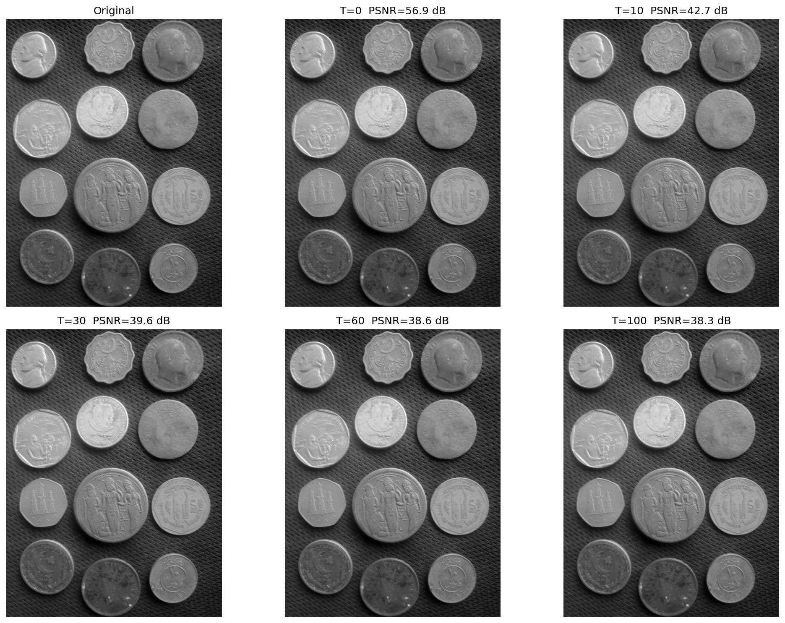
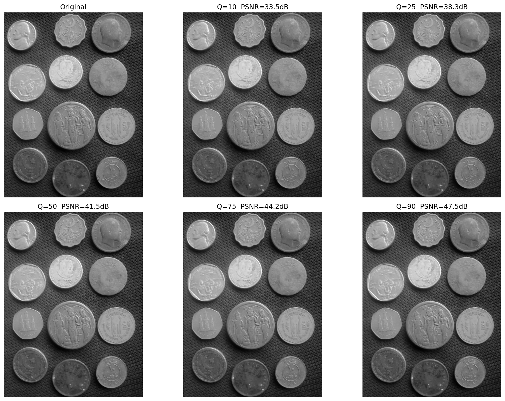
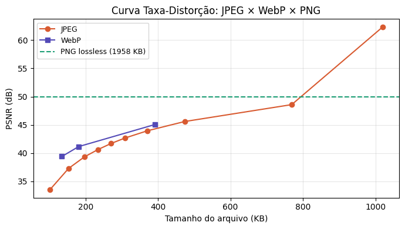
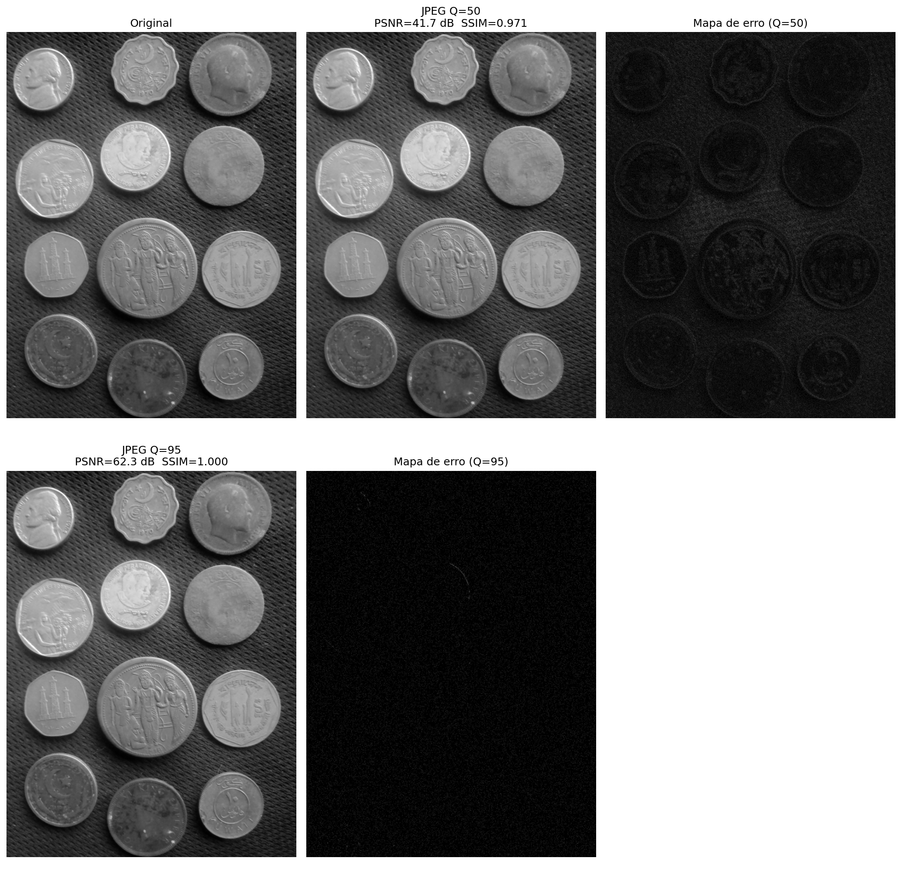

Este capítulo apresenta dois temas fundamentais do Processamento Digital de Imagens (PDI): o domínio da frequência e a compressão de imagens. Enquanto os capítulos anteriores exploraram operações no domínio espacial — filtros de convolução, morfologia e segmentação —, a análise em frequência revela uma perspectiva complementar e poderosa: decompor a imagem em suas componentes oscilatórias, separando estrutura global de detalhes locais.
A Transformada de Fourier Discreta 2D (DFT) constitui a ponte entre o domínio espacial e o domínio da frequência, permitindo que filtros de suavização e realce de bordas, já conhecidos do Capítulo 3, sejam compreendidos e projetados com maior rigor teórico por meio do Teorema da Convolução. Em seguida, as wavelets generalizam essa análise: em vez de decompor a imagem em frequências globais, capturam simultaneamente frequência e localização espacial — um princípio que fundamenta tanto algoritmos modernos de compressão como as arquiteturas de redes neurais convolucionais (CNNs) do Capítulo 8.
A segunda metade do capítulo foca na compressão de imagens: como explorar redundâncias espaciais e psicovisuais para reduzir o tamanho de arquivos sem comprometer a qualidade percebida. A Transformada de Cossenos Discreta (DCT) — operação central do padrão JPEG — e as principais técnicas de codificação entrópica são apresentadas com rigor matemático e implementação prática. O capítulo conclui com a comparação entre os formatos JPEG, PNG e WebP, fornecendo critérios objetivos para a escolha do formato adequado a cada aplicação.
5.1 Objetivos
Ao final deste capítulo, você será capaz de:
Dominar a DFT 2D: Compreender a Transformada de Fourier Discreta bidimensional, interpretar o espectro de magnitude e fase, e distinguir a contribuição de frequências baixas (estrutura global) e altas (bordas e ruído) na formação da imagem;
Aplicar o Teorema da Convolução: Relacionar matematicamente a convolução espacial com a multiplicação no domínio da frequência, e utilizar a FFT para implementar filtragem eficiente em imagens de grande resolução;
Projetar filtros no domínio da frequência: Construir e aplicar filtros passa-baixa (Ideal, Gaussiano, Butterworth), passa-alta e passa-banda, compreendendo o compromisso entre suavização e preservação de bordas;
Compreender wavelets e multirresolução: Entender como a decomposição wavelet captura simultaneamente frequência e localização espacial em múltiplas escalas, e relacionar as subbandas wavelet às camadas de convolução das CNNs;
Entender os fundamentos da compressão: Identificar os tipos de redundância em imagens (espacial, espectral, psicovisual), aplicar a DCT para concentrar energia em coeficientes de baixa frequência e compreender o papel da quantização no compromisso qualidade × taxa;
Comparar e escolher formatos: Avaliar as características de JPEG, PNG e WebP e selecionar o formato adequado com base no conteúdo da imagem e nos requisitos da aplicação.
5.2 Configuração do Ambiente
import os, importlib, urllib.requestimport numpy as npimport matplotlib.pyplot as pltimport cv2from scipy import ndimageBASE_URL ="https://raw.githubusercontent.com/fzampirolli/pdi-vc/master/morph"for f in ["morph.py"]:ifnot os.path.exists(f): urllib.request.urlretrieve(f"{BASE_URL}/{f}", f)import morphimportlib.reload(morph)from morph import mmprint("✅ Ambiente pronto")
✅ Ambiente pronto
5.3 Transformada de Fourier Discreta 2D
A análise de Fourier parte de uma ideia fundamental: qualquer sinal periódico pode ser representado como uma soma (possivelmente infinita) de senoides com diferentes frequências, amplitudes e fases. Aplicada a imagens, essa ideia transforma uma matriz de pixels em uma representação no domínio da frequência, revelando quais padrões oscilatórios compõem a cena.
5.3.1 Definição Matemática
Dada uma imagem \(f(x,y)\) de dimensões \(M \times N\), sua Transformada de Fourier Discreta 2D (DFT) é definida como:
onde \(u = 0, 1, \ldots, M-1\) e \(v = 0, 1, \ldots, N-1\) são as frequências discretas nas direções horizontal e vertical, respectivamente. O exponencial complexo \(e^{-j2\pi(ux/M + vy/N)}\) representa uma oscilação bidimensional de frequência \((u/M, v/N)\) ciclos por pixel.
A Transformada Inversa de Fourier Discreta 2D (IDFT) recupera a imagem original a partir de seu espectro:
\[
\phi(u,v) = \arctan\!\left(\frac{\Im\{F(u,v)\}}{\Re\{F(u,v)\}}\right)
\qquad \text{(espectro de fase)}
\tag{5.4}\]
NotaInterpretação das frequências
Na representação padrão (sem centralização), a frequência \((u,v) = (0,0)\) corresponde ao componente DC — a média global da imagem. Frequências crescentes em \(u\) e \(v\) correspondem a variações cada vez mais rápidas nas direções horizontal e vertical.
Para facilitar a visualização, aplica-se o fftshift: deslocamento circular que reposiciona o componente DC no centro do espectro. Após o shift, o centro contém baixas frequências (estrutura global) e as bordas contêm altas frequências (bordas, texturas, ruído).
O espectro de magnitude é tipicamente visualizado em escala logarítmica \(\log(1 + |F|)\) para comprimir a enorme diferença de amplitude entre o componente DC e as demais frequências.
5.3.2 Implementação e Visualização
import os# ── Carregamento da imagem de teste ──────────────────────────────────────────url ="https://upload.wikimedia.org/wikipedia/commons/2/25/GAZI.MD.AHAD_11.jpg"caminho ="imagens/coins.jpg"ifnot os.path.exists(caminho): os.makedirs("imagens", exist_ok=True) img_obj = mm.read(url, pil=True) mm.write(img_obj, caminho)else: img_obj = mm.read(caminho, pil=True)import numpy as npimg_color = np.array(img_obj)img_gray = mm.gray(img_color)# ── DFT 2D via NumPy ─────────────────────────────────────────────────────────F = np.fft.fft2(img_gray) # transformada complexaF_sh = np.fft.fftshift(F) # DC no centromag = np.log1p(np.abs(F_sh)) # magnitude em logfase = np.angle(F_sh) # fase em radianos [-π, π]# Normalização para visualizaçãomag_vis = cv2.normalize(mag, None, 0, 255, cv2.NORM_MINMAX).astype(np.uint8)fase_vis = cv2.normalize(fase, None, 0, 255, cv2.NORM_MINMAX).astype(np.uint8)print(f"Dimensões da imagem : {img_gray.shape}")print(f"Valor DC F(0,0) : {np.abs(F[0,0]):.1f}")print(f"Máx. magnitude (log) : {mag.max():.2f}")mm.show( [img_gray, mag_vis, fase_vis], titles=["Original (cinza)", "Espectro de Magnitude\n(log, centrado)", "Espectro de Fase"], cols=3, figsize=(14, 5))
Dimensões da imagem : (2560, 1920)
Valor DC F(0,0) : 470124761.0
Máx. magnitude (log) : 19.97

Figura 5.1: DFT de uma imagem natural: imagem original, espectro de magnitude (escala log, centrado) e espectro de fase. As baixas frequências (centro) dominam a estrutura global; as altas frequências (bordas) capturam detalhes e contornos.
5.3.3 Magnitude, Fase e Reconstrução
Um experimento clássico ilustra o papel diferente de magnitude e fase na reconstrução da imagem: trocar os espectros de fase de duas imagens distintas e reconstruir cada uma com a magnitude original combinada com a fase da outra. O resultado revela que a fase carrega a estrutura semântica (contornos, posição dos objetos), enquanto a magnitude determina o conteúdo energético e textural.
# ── Imagem B sintética: grade de quadrados ────────────────────────────────────h, w = img_gray.shapeimg_B = np.zeros((h, w), dtype=np.uint8)for i inrange(0, h, 60):for j inrange(0, w, 60): img_B[i:i+30, j:j+30] =200# ── DFT de ambas as imagens ──────────────────────────────────────────────────FA = np.fft.fft2(img_gray.astype(np.float32))FB = np.fft.fft2(img_B.astype(np.float32))mag_A, fase_A = np.abs(FA), np.angle(FA)mag_B, fase_B = np.abs(FB), np.angle(FB)# ── Recombinação cruzada ─────────────────────────────────────────────────────def recombinar(mag, fase):"""Reconstrói imagem a partir de magnitude e fase separadas.""" F_rec = mag * np.exp(1j* fase) rec = np.real(np.fft.ifft2(F_rec))return cv2.normalize(rec, None, 0, 255, cv2.NORM_MINMAX).astype(np.uint8)rec_mag_A_fase_B = recombinar(mag_A, fase_B) # magnitude de A, fase de Brec_mag_B_fase_A = recombinar(mag_B, fase_A) # magnitude de B, fase de Amm.show( [img_gray, img_B, rec_mag_A_fase_B, rec_mag_B_fase_A], titles=["Imagem A (moedas)","Imagem B (grade)","mag(A) + fase(B)","mag(B) + fase(A)" ], cols=4, figsize=(16, 5))

Figura 5.2: Papel da magnitude e da fase: reconstrução com magnitude de A e fase de B, e vice-versa. A fase domina a percepção de estrutura — o resultado preserva a forma do objeto cuja fase foi emprestada.
5.3.4 Simulador Interativo: Decomposição em Frequências
O simulador a seguir permite explorar interativamente como diferentes componentes de frequência contribuem para a formação da imagem. Adicione ou remova frequências e observe o efeito acumulado na reconstrução.
∿ Simulador: Decomposição de Fourier 1D
soma de senoides
Termos
1
Erro RMS
–
Forma Alvo
quadrada
Forma Alvo
Nº de Termos
1
Exibição
Figura 5.3: Simulador interativo da decomposição de Fourier 1D: visualização da soma de senoides com diferentes frequências, amplitudes e fases. Adicione termos e observe a convergência para formas de onda arbitrárias.
5.4 Teorema da Convolução
O Teorema da Convolução estabelece uma das relações mais importantes entre os domínios espacial e de frequência:
onde \(*\) denota convolução espacial e \(\cdot\) a multiplicação ponto a ponto (pointwise) no domínio da frequência. Em palavras: convolução no espaço equivale a multiplicação em frequência. A direção inversa também vale:
5.4.1 Eficiência Computacional: DFT vs Convolução Direta
A implicação prática imediata é de natureza algorítmica. Para um filtro de tamanho \(K \times K\) aplicado a uma imagem \(N \times N\):
Tabela 5.1: Comparação de complexidade computacional entre convolução direta e filtragem via FFT.
Método
Complexidade
Exemplo (\(N=512\), \(K=51\))
Convolução direta
\(O(N^2 K^2)\)
\(\approx 682 \times 10^6\) ops
Filtragem via FFT
\(O(N^2 \log N)\)
\(\approx 2{,}36 \times 10^6\) ops
A filtragem via FFT torna-se significativamente mais eficiente quando o filtro \(h\) é grande. O fluxo computacional é:
\[
g = \mathcal{F}^{-1}\bigl[\mathcal{F}(f) \cdot \mathcal{F}(h)\bigr]
\tag{5.6}\]
NotaPadding e artefatos de borda
A DFT assume periodicidade: o sinal é tratado como se repetisse infinitamente. Isso causa artefatos de borda (ringing) quando a imagem tem descontinuidades nas bordas. Para mitigar esse efeito, aplica-se zero-padding — extensão da imagem com zeros antes da transformada — garantindo que a convolução circular aproxime adequadamente a convolução linear.
A dimensão após padding deve ser, preferencialmente, uma potência de 2 (ou produto de pequenos primos) para maximizar a eficiência da FFT.
# ── Kernel Gaussiano 11×11 ────────────────────────────────────────────────────sigma =3.0K =11ks = np.arange(K) - K //2gauss1d = np.exp(-ks**2/ (2* sigma**2))gauss1d /= gauss1d.sum()kernel = np.outer(gauss1d, gauss1d) # kernel 2D separável# ── Método 1: Convolução espacial direta ─────────────────────────────────────f_float = img_gray.astype(np.float64)conv_esp = cv2.filter2D(f_float, -1, kernel, borderType=cv2.BORDER_CONSTANT)# ── Método 2: Multiplicação em frequência (via FFT) ──────────────────────────M, N = f_float.shape# Padding para convolução linear (evita aliasing circular)Mpad =2**int(np.ceil(np.log2(M + K -1)))Npad =2**int(np.ceil(np.log2(N + K -1)))# Posiciona o kernel com a origem no (0,0) e padding com zeroskernel_pad = np.zeros((Mpad, Npad))kh, kw = kernel.shapekernel_pad[:kh, :kw] = kernelF_img = np.fft.fft2(f_float, (Mpad, Npad))F_kern = np.fft.fft2(kernel_pad)conv_freq = np.real(np.fft.ifft2(F_img * F_kern))# Recorte para compensar o deslocamento introduído pelo posicionamento do kerneloffset = K //2conv_freq_crop = conv_freq[offset:offset+M, offset:offset+N]# ── Verificação numérica ──────────────────────────────────────────────────────diff = np.abs(conv_esp - conv_freq_crop)print(f"Diferença máxima (|conv_esp - conv_freq|): {diff.max():.2e}")print(f"Diferença média (|conv_esp - conv_freq|): {diff.mean():.2e}")print(f"→ Teorema da Convolução verificado numericamente.")conv_esp_vis = cv2.normalize(conv_esp, None, 0, 255, cv2.NORM_MINMAX).astype(np.uint8)conv_freq_vis = cv2.normalize(conv_freq_crop, None, 0, 255, cv2.NORM_MINMAX).astype(np.uint8)diff_vis = cv2.normalize(diff, None, 0, 255, cv2.NORM_MINMAX).astype(np.uint8)mm.show( [img_gray, conv_esp_vis, conv_freq_vis, diff_vis], titles=["Original","Convolução espacial","Multiplicação em frequência",f"Diferença (máx={diff.max():.1e})" ], cols=4, figsize=(16, 5))
Diferença máxima (|conv_esp - conv_freq|): 2.56e-13
Diferença média (|conv_esp - conv_freq|): 2.88e-14
→ Teorema da Convolução verificado numericamente.

Figura 5.4: Verificação do Teorema da Convolução: a diferença pixel a pixel entre a convolução espacial (cv2.filter2D) e a multiplicação em frequência (FFT) é numericamente nula — confirmando a equivalência teórica.
5.5 Filtros no Domínio da Frequência
O domínio da frequência oferece uma forma direta de projetar filtros com resposta em frequência prescrita. A função de transferência \(H(u,v)\) determina quais frequências são preservadas (valor próximo de 1) ou atenuadas (valor próximo de 0).
5.5.1 Filtros Passa-Baixa
Filtros passa-baixa atenuam altas frequências, suavizando a imagem e reduzindo ruído. Definem-se em termos da distância ao centro do espectro:
O corte abrupto em \(D_0\) causa o fenômeno de Gibbs (ringing): oscilações artificiais próximas às bordas dos objetos, análogas ao comportamento da série de Fourier truncada.
A forma Gaussiana possui uma propriedade notável: sua transformada de Fourier é também Gaussiana. Isso garante transição suave sem ringing, ao custo de menor precisão no controle da banda de corte.
O parâmetro \(n\) controla a inclinação da transição: valores baixos (\(n=1,2\)) produzem transições suaves (sem ringing); valores altos (\(n \geq 5\)) aproximam o comportamento do filtro ideal.
5.5.2 Filtros Passa-Alta e Passa-Banda
Filtros passa-alta são obtidos diretamente pelo complemento de filtros passa-baixa:
São especialmente úteis na remoção de ruído periódico: padrões regulares (interferência elétrica, grade de scanner) aparecem como picos no espectro de magnitude e podem ser suprimidos com um filtro rejeita-banda (notch filter) posicionado sobre esses picos.
import iodef distancia_centro(M, N):"""Matriz de distâncias ao centro do espectro.""" u = np.arange(M) - M //2 v = np.arange(N) - N //2 V, U = np.meshgrid(v, u)return np.sqrt(U**2+ V**2)def aplicar_filtro_freq(img, H):"""Aplica filtro H (centrado) a imagem via FFT.""" F = np.fft.fftshift(np.fft.fft2(img.astype(np.float64))) Fg = F * H g = np.real(np.fft.ifft2(np.fft.ifftshift(Fg)))return cv2.normalize(g, None, 0, 255, cv2.NORM_MINMAX).astype(np.uint8)M, N = img_gray.shapeD = distancia_centro(M, N)D0 =30# frequência de corten_bw =2# ordem do Butterworth# ── Funções de transferência ──────────────────────────────────────────────────H_ideal = (D <= D0).astype(np.float64)H_gauss = np.exp(-D**2/ (2* D0**2))H_bw =1.0/ (1.0+ (D / D0)**(2* n_bw))# ── Imagens filtradas ─────────────────────────────────────────────────────────img_ideal = aplicar_filtro_freq(img_gray, H_ideal)img_gauss = aplicar_filtro_freq(img_gray, H_gauss)img_bw = aplicar_filtro_freq(img_gray, H_bw)# ── Perfis de H(u,v) ─────────────────────────────────────────────────────────def fig2img(fig): b = io.BytesIO(); fig.savefig(b, format='png', dpi=100); plt.close(fig); b.seek(0)return (plt.imread(b)[:,:,:3]*255).astype(np.uint8)fig, ax = plt.subplots(figsize=(6, 3))linha = M //2ax.plot(H_ideal[linha, :], label="Ideal", color="#D85A30", lw=1.5, ls="--")ax.plot(H_gauss[linha, :], label="Gaussiano", color="#1D9E75", lw=1.5)ax.plot(H_bw[linha, :], label="Butterworth", color="#534AB7", lw=1.5)ax.axvline(N//2-D0, color="#aaa", lw=0.8, ls=":")ax.axvline(N//2+D0, color="#aaa", lw=0.8, ls=":")ax.set(title="Perfis H(u,v) — linha central", xlabel="v", ylabel="H(u,v)")ax.legend(fontsize=8); plt.tight_layout()perfil_img = fig2img(fig)# ── Filtros H visualizados ────────────────────────────────────────────────────def H_vis(H):return cv2.normalize((H*255).astype(np.uint8), None, 0, 255, cv2.NORM_MINMAX)mm.show( [img_gray, img_ideal, img_gauss, img_bw, H_vis(H_ideal), H_vis(H_gauss), H_vis(H_bw), perfil_img], titles=["Original", "LPF Ideal", "LPF Gaussiano", "LPF Butterworth (n=2)","H Ideal", "H Gaussiano","H Butterworth", "Perfis H(u,v)" ], cols=4, figsize=(16, 9))

Figura 5.5: Comparação entre filtros passa-baixa: Ideal (D₀=30), Gaussiano (σ=30) e Butterworth (D₀=30, n=2). Perfis de H(u,v) ao longo de uma linha central e imagens filtradas correspondentes.
5.5.3 Remoção de Ruído Periódico
Ruído periódico — proveniente de interferência elétrica, sensores com padrão regular ou artefatos de digitalização — manifesta-se no espectro de Fourier como picos pontuais simétricos em torno do centro. O filtro rejeita-banda notch suprime seletivamente essas frequências, preservando o restante da imagem.
# ── Imagem com ruído periódico sintético ──────────────────────────────────────h_img, w_img = img_gray.shapex = np.arange(w_img); y = np.arange(h_img)X, Y = np.meshgrid(x, y)# Ruído senoidal com frequências (u0=20, v0=20) e simétricasruido =40* np.sin(2* np.pi * (20* X / w_img +20* Y / h_img))img_ruidosa = np.clip(img_gray.astype(np.float64) + ruido, 0, 255).astype(np.uint8)# ── Espectro da imagem ruidosa ───────────────────────────────────────────────F_r = np.fft.fftshift(np.fft.fft2(img_ruidosa.astype(np.float64)))mag_r = np.log1p(np.abs(F_r))mag_vis = cv2.normalize(mag_r, None, 0, 255, cv2.NORM_MINMAX).astype(np.uint8)# ── Máscara notch (suprime os picos do ruído) ────────────────────────────────mascara = np.ones((h_img, w_img), dtype=np.float64)r_notch =10# raio da região suprimidadef suprimir_pico(mask, cy, cx, r):"""Zera um disco de raio r centrado em (cy, cx) na máscara.""" yy, xx = np.ogrid[:mask.shape[0], :mask.shape[1]] dist = np.sqrt((yy - cy)**2+ (xx - cx)**2) mask[dist <= r] =0return mask# Coordenadas dos picos no espectro centralizadocy0, cx0 = h_img //2, w_img //2dy0 =int(round(20* h_img / h_img)) # = 20dx0 =int(round(20* w_img / w_img)) # = 20for dy, dx in [(+dy0,+dx0),(-dy0,-dx0),(+dy0,-dx0),(-dy0,+dx0)]: mascara = suprimir_pico(mascara, cy0+dy, cx0+dx, r_notch)mascara_vis = (mascara *255).astype(np.uint8)# ── Filtragem e reconstrução ─────────────────────────────────────────────────F_filtrada = F_r * mascaraimg_rest = np.real(np.fft.ifft2(np.fft.ifftshift(F_filtrada)))img_rest_vis = cv2.normalize(img_rest, None, 0, 255, cv2.NORM_MINMAX).astype(np.uint8)psnr = cv2.PSNR(img_gray, img_rest_vis)print(f"PSNR (original vs restaurada): {psnr:.2f} dB")mm.show( [img_gray, img_ruidosa, mag_vis, mascara_vis, img_rest_vis], titles=["Original","Com ruído periódico","Espectro (log)","Máscara notch",f"Restaurada (PSNR={psnr:.1f} dB)" ], cols=5, figsize=(18, 4))
PSNR (original vs restaurada): 31.30 dB

Figura 5.6: Remoção de ruído periódico via filtro notch no domínio da frequência: (a) imagem com ruído senoidal, (b) espectro mostrando os picos do ruído, (c) máscara notch centrada nos picos, (d) imagem restaurada.
5.6 Wavelets e Multirresolução
A Transformada de Fourier decompõe o sinal em frequências globais: cada coeficiente \(F(u,v)\) carrega informação de toda a imagem. Isso é adequado para filtragem espectral, mas inadequado quando as características de interesse variam com a posição espacial — uma borda localizada ou uma textura presente apenas em parte da imagem.
As wavelets (ondaletas) resolvem essa limitação oferecendo uma representação simultânea em frequência e localização espacial. Enquanto a DFT usa senoides de suporte infinito como base, a Transformada de Wavelet usa funções compactas — com energia concentrada em uma região finita — que podem ser deslocadas e escaladas.
5.6.1 Transformada Wavelet Discreta 2D
A Transformada Wavelet Discreta 2D (TWD) decompõe a imagem \(f\) em subbandas por meio de bancos de filtros aplicados separadamente em linhas e colunas, seguidos de subamostragem por 2:
LL (Low-Low): aproximação de baixa frequência — versão suavizada e reduzida da imagem original;
LH (Low-High): detalhes horizontais — bordas horizontais e variações verticais;
HL (High-Low): detalhes verticais — bordas verticais e variações horizontais;
HH (High-High): detalhes diagonais — texturas em 45° e cantos.
A decomposição é recursiva: a subbanda LL pode ser novamente decomposta, produzindo a análise multirresolução. Após \(J\) níveis, obtém-se uma representação hierárquica com \(3J+1\) subbandas.
NotaConexão com CNNs
A estrutura hierárquica da DWT antecipa a arquitetura das Redes Neurais Convolucionais: as camadas de convolução + pooling das CNNs realizam essencialmente uma análise multirresolução aprendida. As subbandas LH/HL/HH correspondem conceitualmente aos mapas de ativação de detectores de borda orientados, e a subbanda LL corresponde à representação de baixa resolução que alimenta as camadas mais profundas. O Capítulo 8 retomará essa conexão em detalhe.
5.6.2 Família de Wavelets
As wavelets definem-se por uma função de escala\(\phi\) (wavelet pai) e uma wavelet mãe\(\psi\). Diferentes escolhas resultam em diferentes compromissos:
Tabela 5.2: Comparação entre famílias de wavelets.
Wavelet
Suporte
Momentos nulos
Simetria
Uso típico
Haar
2
1
Assimétrica
Análise básica, educação
Daubechies db4
8
4
Assimétrica
Compressão, análise geral
Symlet sym4
8
4
Quase simétrica
Reconstrução de sinais
Biortogonal 2.2
5/3
2/2
Simétrica
JPEG 2000 (lossless)
Biortogonal 9/7
9/7
4/4
Simétrica
JPEG 2000 (lossy)
O número de momentos nulos controla a compactação: uma wavelet com \(p\) momentos nulos representa com coeficientes nulos (ou pequenos) qualquer polinômio de grau até \(p-1\), o que é fundamental para compressão.
Figura 5.7: Decomposição wavelet 2D de 2 níveis com wavelet Haar: subbandas LL, LH, HL, HH em cada nível. As subbandas de detalhe revelam estruturas orientadas em diferentes escalas.
Figura 5.8: Comparação entre famílias de wavelets: Haar, db4, sym4 e bior2.2. Subbanda LL₁ (aproximação) e HH₁ (diagonal) para cada escolha, ilustrando o compromisso entre compactação e suavidade.
def dwt_threshold_reconstruct(img, wavelet='db4', nivel=2, threshold=0.0):"""Decompõe, aplica limiar e reconstrói via IDWT.""" coefs = pywt.wavedec2(img.astype(np.float64), wavelet, level=nivel)# Copia e aplica hard thresholding em todos os detalhe coefs_t = [coefs[0]] # LL final não é limiarizadofor detalhe in coefs[1:]: coefs_t.append(tuple(pywt.threshold(sb, threshold, mode='hard') for sb in detalhe)) rec = pywt.waverec2(coefs_t, wavelet)# Recorte para dimensão original rec = rec[:img.shape[0], :img.shape[1]]return np.clip(rec, 0, 255).astype(np.uint8)thresholds = [0, 10, 30, 60, 100]imgs_thr = [img_gray]titles_thr = ["Original"]for t in thresholds: rec = dwt_threshold_reconstruct(img_gray, threshold=t) psnr = cv2.PSNR(img_gray, rec) imgs_thr .append(rec) titles_thr.append(f"T={t} PSNR={psnr:.1f} dB")mm.show(imgs_thr, titles=titles_thr, cols=3, figsize=(14, 10))

Figura 5.9: Reconstrução wavelet com limiamento de coeficientes (hard thresholding): à medida que o limiar aumenta, mais detalhes são zerificados, produzindo imagens progressivamente mais suaves. Métrica PSNR quantifica a perda de qualidade.
5.7 Compressão de Imagens
A compressão de imagens visa reduzir a quantidade de dados necessária para armazenar ou transmitir uma imagem, explorando redundâncias presentes na representação original. Em uma imagem de \(512 \times 512\) pixels com 3 canais de 8 bits, o tamanho bruto é \(512 \times 512 \times 3 = 786.432\) bytes (≈ 768 KB) — mas padrões modernos conseguem representá-la com 20–50 KB sem perda perceptível de qualidade.
5.7.1 Taxonomia das Redundâncias
Três categorias principais de redundância são exploradas por algoritmos de compressão:
Tabela 5.3: Tipos de redundância em imagens e como são exploradas.
Tipo
Definição
Explorada por
Espacial (interpixel)
Pixels vizinhos são altamente correlacionados
DCT, codificação preditiva
Espectral (interchannel)
Canais de cor são correlacionados (R ≈ G ≈ B em imagens naturais)
Conversão YCbCr
Psicovisual
O sistema visual humano é insensível a certas variações de alta freq.
Quantização JPEG
A compressão é classificada em duas categorias fundamentais:
Sem perda (lossless): reconstrução bit-a-bit idêntica ao original. Usada quando integridade é crítica (imagens médicas, documentos).
Com perda (lossy): permite distorção controlada para ganhos maiores de compressão. Adequada para fotografia e vídeo, onde o SVH tolera imperfeições.
5.7.2 Transformada de Cossenos Discreta (DCT)
A Transformada de Cossenos Discreta (DCT) é a operação central do padrão JPEG. Diferentemente da DFT (que usa base complexa), a DCT é puramente real, o que a torna computacionalmente mais eficiente e numericamente mais estável.
Para um bloco \(f(x,y)\) de dimensões \(N \times N\), a DCT-II 2D é definida como:
\[
\alpha(k) = \begin{cases} \sqrt{1/N}, & k = 0 \\ \sqrt{2/N}, & k > 0 \end{cases}
\tag{5.15}\]
O coeficiente \(C(0,0)\) corresponde ao componente DC (média do bloco); os demais, aos componentes AC de frequências crescentes. A DCT concentra a energia nos coeficientes de baixa frequência — o coeficiente DC tipicamente contém 80–95% da energia do bloco, permitindo que os coeficientes AC de alta frequência sejam fortemente quantizados sem degradação visual perceptível.
NotaDCT vs DFT: vantagem da compactação de energia
Tanto a DCT quanto a DFT transformam um bloco \(N \times N\) em \(N \times N\) coeficientes. A diferença crítica para compressão é a compactação de energia: para imagens naturais, a DCT concentra mais energia nos primeiros coeficientes do que a DFT. Isso ocorre porque a DCT assume simetria par do sinal — equivalente a uma extensão periódica sem descontinuidade — reduzindo o ringing nas bordas do bloco. A consequência prática é que mais coeficientes DCT podem ser zerados sem degradação visível, resultando em maior compressão.
from scipy.fft import dct, idctdef dct2(bloco):"""DCT-II 2D ortogonal via separabilidade."""return dct(dct(bloco.T, norm='ortho').T, norm='ortho')def idct2(coefs):"""IDCT-II 2D ortogonal."""return idct(idct(coefs.T, norm='ortho').T, norm='ortho')# ── Bloco 8×8 extraído da imagem ─────────────────────────────────────────────cy, cx = img_gray.shape[0]//2, img_gray.shape[1]//2bloco = img_gray[cy:cy+8, cx:cx+8].astype(np.float64) -128.0# centrado em 0C = dct2(bloco)print("Coeficientes DCT do bloco 8×8 (arredondados):")print(np.round(C).astype(int))print(f"\nEnergia no coeficiente DC : {C[0,0]**2:.1f}")print(f"Energia total do bloco : {(C**2).sum():.1f}")print(f"Fração no DC : {C[0,0]**2/ (C**2).sum():.1%}")# ── Reconstrução progressiva (zera coeficientes de alta freq.) ───────────────imgs_rec, titles_rec = [cv2.normalize((bloco+128).astype(np.uint8), None, 0, 255, cv2.NORM_MINMAX)], ["Bloco original"]for keep in [1, 4, 10, 20, 40, 64]:# Ordena coeficientes por frequência crescente (varredura zig-zag simplificada) C_trunc = np.zeros_like(C)# Percorre na ordem (u+v crescente) e mantém 'keep' coeficientes indices =sorted([(u,v) for u inrange(8) for v inrange(8)], key=lambda p: p[0]+p[1])for u, v in indices[:keep]: C_trunc[u, v] = C[u, v] rec = idct2(C_trunc) +128 rec_vis = np.clip(rec, 0, 255).astype(np.uint8) imgs_rec .append(rec_vis) titles_rec.append(f"{keep} coef.")mm.show(imgs_rec, titles=titles_rec, cols=4, figsize=(12, 7))
Figura 5.10: DCT-II 2D em um bloco 8×8: coeficientes brutos, coeficientes em log-abs e reconstução progressiva adicionando frequências de baixa para alta. O coeficiente DC concentra a maior parte da energia.
5.7.3 Pipeline JPEG
O padrão JPEG aplica a DCT em blocos disjuntos de \(8 \times 8\) pixels. O pipeline completo envolve seis etapas principais:
Etapa 1 — Conversão RGB → YCbCr: O espaço YCbCr separa luminância (Y) de crominância (Cb, Cr). O SVH é muito mais sensível a variações de luminância do que de cor, permitindo que Cb e Cr sejam quantizados mais agressivamente.
Etapa 2 — Subamostragem de crominância: Os canais Cb e Cr são subamostrados (tipicamente 4:2:0 — metade da resolução horizontal e vertical), eliminando cerca de 50% dos dados de cor com impacto visual mínimo.
Etapa 3 e 4 — Blocos 8×8 e DCT: A imagem é particionada em blocos de \(8 \times 8\) pixels. Cada bloco é centrado em zero (subtrai 128) e submetido à DCT-II 2D.
Etapa 5 — Quantização: Cada coeficiente \(C(u,v)\) é dividido por um fator de quantização \(Q(u,v)\) e arredondado:
A tabela de quantização\(Q\) é o coração do compromisso qualidade-compressão: valores maiores em \(Q\) produzem mais zeros (maior compressão, menor qualidade). O fator de qualidade JPEG escala \(Q\) globalmente.
Etapa 6 — Codificação entrópica: Os coeficientes quantizados (muitos zeros) são reordenados em zigzag, serializando por frequência crescente. Sequências de zeros são codificadas de forma compacta (run-length encoding, RLE), e o resultado é comprimido por Huffman ou codificação aritmética.
# ── Tabela de quantização luminância (padrão JPEG) ────────────────────────────Q_luma = np.array([ [16,11,10,16,24,40,51,61], [12,12,14,19,26,58,60,55], [14,13,16,24,40,57,69,56], [14,17,22,29,51,87,80,62], [18,22,37,56,68,109,103,77], [24,35,55,64,81,104,113,92], [49,64,78,87,103,121,120,101], [72,92,95,98,112,100,103,99]], dtype=np.float64)def jpeg_compress_block(bloco, Q_table):"""DCT → quantização → dequantização → IDCT em bloco 8×8.""" C = dct2(bloco.astype(np.float64) -128) Cq = np.round(C / Q_table) * Q_table # quantiza e dequantizareturn np.clip(idct2(Cq) +128, 0, 255)def jpeg_quality_compress(img, qualidade=50):"""JPEG simplificado: comprime imagem inteira por blocos 8×8."""# Fator de escala: qualidade 50 = sem escala; >50 = maior qualidadeif qualidade <50: escala =5000/ qualidadeelse: escala =200-2* qualidade Q = np.clip(np.round(Q_luma * escala /100), 1, 255) h, w = img.shape result = np.zeros_like(img, dtype=np.float64)for r inrange(0, h-7, 8):for c inrange(0, w-7, 8): result[r:r+8, c:c+8] = jpeg_compress_block(img[r:r+8, c:c+8], Q)return result.astype(np.uint8)# ── Comparação de fatores de qualidade ───────────────────────────────────────qualidades = [10, 25, 50, 75, 90]imgs_jpeg = [img_gray]titles_jpeg = ["Original"]for q in qualidades: rec = jpeg_quality_compress(img_gray, qualidade=q) psnr = cv2.PSNR(img_gray, rec) imgs_jpeg .append(rec) titles_jpeg.append(f"Q={q} PSNR={psnr:.1f}dB")mm.show(imgs_jpeg, titles=titles_jpeg, cols=3, figsize=(14, 10))

Figura 5.11: Pipeline JPEG simplificado: DCT em blocos 8×8, quantização com diferentes fatores de qualidade e reconstrução via IDCT. O artefato de blocos torna-se visível para qualidades baixas (Q=10–20).
5.7.4 Simulador Interativo: Quantização DCT
O simulador a seguir permite explorar o efeito da quantização sobre um bloco \(8 \times 8\): altere o fator de qualidade e observe como os coeficientes DCT são zerados e como isso afeta a reconstrução visual.
Figura 5.12: Simulador interativo de compressão DCT-JPEG: ajuste o fator de qualidade e visualize em tempo real os coeficientes zerados, o bloco reconstruído e o erro de quantização.
5.8 Comparação de Formatos de Imagem
A escolha do formato de arquivo impacta diretamente o compromisso entre qualidade, tamanho e velocidade de decodificação. Os três formatos mais relevantes para aplicações web e computação visual são JPEG, PNG e WebP.
5.8.1 Características dos Formatos
Tabela 5.4: Comparação entre os principais formatos de imagem rasterizados.
Característica
JPEG
PNG
WebP
Compressão
Com perda
Sem perda
Com e sem perda
Transparência (alfa)
✗
✓
✓
Suporte a animação
✗
Limitado
✓
Algoritmo base
DCT + Huffman
DEFLATE (LZ77 + Huffman)
VP8 / VP8L
Melhor para
Fotografia
Gráficos, texto, ícones
Web (substituto universal)
Pior para
Texto, bordas nítidas
Fotos de alta resolução
Compatibilidade legada
5.8.2 Métricas de Qualidade
Duas métricas objetivas são amplamente usadas para avaliar a qualidade de imagens comprimidas:
onde \(L = 255\) para imagens de 8 bits e MSE é o erro quadrático médio. Valores típicos: PSNR > 40 dB indica qualidade excelente; 30–40 dB, qualidade boa; < 30 dB, degradação visível.
O SSIM varia em \([-1, 1]\), com 1 indicando identidade perfeita. Diferentemente do PSNR, o SSIM leva em conta correlações estruturais, sendo mais alinhado com a percepção humana de qualidade.
NotaPSNR vs SSIM: qual usar?
O PSNR é simples e rápido, mas pode superestimar a qualidade em imagens com artefatos localizados (blocos JPEG) ou subestimá-la quando o ruído é perceptualmente irrelevante (diferença de brilho global). O SSIM captura melhor a percepção humana, mas é mais caro computacionalmente.
Para avaliação rigorosa de algoritmos de compressão, recomenda-se reportar ambas as métricas, além de avaliação subjetiva em estudos perceptuais.
import os, io as io_modimport matplotlib.pyplot as plt# ── Salvar em diferentes formatos e medir tamanho + PSNR ─────────────────────os.makedirs("imagens/comp_test", exist_ok=True)resultados = []# JPEG com múltiplos fatores de qualidadefor q in [10, 20, 30, 40, 50, 60, 70, 80, 90, 95]: path =f"imagens/comp_test/coins_q{q}.jpg" cv2.imwrite(path, img_gray, [cv2.IMWRITE_JPEG_QUALITY, q]) rec = cv2.imread(path, cv2.IMREAD_GRAYSCALE) psnr = cv2.PSNR(img_gray, rec) tamanho = os.path.getsize(path) /1024# KB resultados.append({"formato": "JPEG", "qualidade": q, "PSNR": psnr, "KB": tamanho})# PNG (sem perda)path_png ="imagens/comp_test/coins.png"cv2.imwrite(path_png, img_gray, [cv2.IMWRITE_PNG_COMPRESSION, 9])rec_png = cv2.imread(path_png, cv2.IMREAD_GRAYSCALE)resultados.append({"formato": "PNG", "qualidade": "lossless","PSNR": float('inf'), "KB": os.path.getsize(path_png)/1024})# WebP lossyfor q in [50, 75, 90]: path_w =f"imagens/comp_test/coins_q{q}.webp" cv2.imwrite(path_w, img_gray, [cv2.IMWRITE_WEBP_QUALITY, q]) rec_w = cv2.imread(path_w, cv2.IMREAD_GRAYSCALE) psnr_w = cv2.PSNR(img_gray, rec_w) resultados.append({"formato": "WebP", "qualidade": q,"PSNR": psnr_w, "KB": os.path.getsize(path_w)/1024})# ── Curva taxa-distorção ──────────────────────────────────────────────────────jpeg_r = [r for r in resultados if r["formato"]=="JPEG"]webp_r = [r for r in resultados if r["formato"]=="WebP"]png_r = [r for r in resultados if r["formato"]=="PNG"]fig, ax = plt.subplots(figsize=(7, 4))ax.plot([r["KB"] for r in jpeg_r], [r["PSNR"] for r in jpeg_r],"o-", label="JPEG", color="#D85A30", lw=1.5)ax.plot([r["KB"] for r in webp_r], [r["PSNR"] for r in webp_r],"s-", label="WebP", color="#534AB7", lw=1.5)ax.axhline(50, color="#1D9E75", lw=1.5, ls="--", label=f"PNG lossless ({png_r[0]['KB']:.0f} KB)")ax.set(xlabel="Tamanho do arquivo (KB)", ylabel="PSNR (dB)", title="Curva Taxa-Distorção: JPEG × WebP × PNG")ax.legend(fontsize=9); ax.grid(True, alpha=0.3); plt.tight_layout()plt.savefig("imagens/comp_test/rdc.png", dpi=100)plt.show()# ── Tabela resumo ─────────────────────────────────────────────────────────────print(f"Tamanho original (sem compressão): {img_gray.nbytes/1024:.0f} KB")print(f"\n{'Formato':>8}{'Qual.':>6}{'KB':>7}{'PSNR (dB)':>11}")print("-"*38)for r in resultados: psnr_str =f"{r['PSNR']:>11.2f}"if r['PSNR'] !=float('inf') elsef"{'∞ (lossless)':>11}"print(f"{r['formato']:>8}{str(r['qualidade']):>6}{r['KB']:>7.1f}{psnr_str}")

Figura 5.13: Comparação PSNR × tamanho de arquivo entre JPEG (vários fatores de qualidade), PNG e WebP para a imagem de moedas. A curva taxa-distorção evidencia o compromisso entre compressão e fidelidade.
try:from skimage.metrics import structural_similarity as ssim HAS_SSIM =TrueexceptImportError:import subprocess subprocess.run(["pip", "install", "scikit-image", "-q"])from skimage.metrics import structural_similarity as ssim HAS_SSIM =Truequalidades_ssim = [25, 50, 75, 95]imgs_ssim = [img_gray]titles_ssim = ["Original"]for q in qualidades_ssim: path =f"imagens/comp_test/coins_q{q}.jpg" rec = cv2.imread(path, cv2.IMREAD_GRAYSCALE)# Verifica se a imagem foi carregadaif rec isNone:print(f"Erro: não foi possível carregar {path}")continue# Redimensiona se necessário (garante mesmo tamanho que img_gray)if rec.shape != img_gray.shape: rec = cv2.resize(rec, (img_gray.shape[1], img_gray.shape[0])) psnr_v = cv2.PSNR(img_gray, rec) ssim_v, mapa = ssim(img_gray, rec, full=True)# Mapa de erro (realça diferenças) diff_vis = cv2.normalize(np.abs(img_gray.astype(float) - rec.astype(float)),None, 0, 255, cv2.NORM_MINMAX).astype(np.uint8) imgs_ssim += [rec, diff_vis] titles_ssim += [f"JPEG Q={q}\nPSNR={psnr_v:.1f} dB SSIM={ssim_v:.3f}",f"Mapa de erro (Q={q})"]mm.show(imgs_ssim, titles=titles_ssim, cols=3, figsize=(14, 14))
Erro: não foi possível carregar imagens/comp_test/coins_q25.jpg
Erro: não foi possível carregar imagens/comp_test/coins_q75.jpg

Figura 5.14: Comparação visual PSNR vs SSIM para JPEG em diferentes qualidades: mapas de diferença e valores de SSIM evidenciam artefatos de bloco nas regiões de alta frequência (bordas e texturas).
5.9 Aplicação Prática: Remoção de Ruído por Filtragem Espectral
Reunindo as técnicas do capítulo, apresenta-se um pipeline completo de remoção de ruído que combina análise no domínio da frequência com filtragem adaptativa. O objetivo é remover um ruído misto (Gaussiano + periódico) preservando ao máximo a estrutura original da imagem.
O par de métricas PSNR / SSIM fornece uma avaliação complementar: - PSNR penaliza uniformemente todos os erros pixel a pixel. - SSIM avalia a preservação de estruturas perceptualmente relevantes.
Um bom filtro maximiza ambos, mas na prática existe um compromisso: filtros muito agressivos (corte baixo) reduzem o ruído mas destroem bordas, aumentando o PSNR de ruído mas diminuindo o SSIM.
Figura 5.15: Pipeline completo de remoção de ruído espectral: identificação automática de picos no espectro, filtragem Butterworth + notch e comparação quantitativa com PSNR/SSIM.
5.10 Resumo
Neste capítulo foram apresentadas as transformadas no domínio da frequência e os fundamentos da compressão de imagens, complementando a análise no domínio espacial dos capítulos anteriores:
DFT 2D e espectro: A Transformada de Fourier Discreta decompõe a imagem em componentes oscilatórias. O espectro de magnitude (em escala log, centrado) revela a distribuição de energia: baixas frequências no centro (estrutura global), altas nas bordas (detalhes e ruído). O espectro de fase carrega a informação estrutural semântica da imagem.
Teorema da Convolução: Convolução espacial equivale a multiplicação em frequência. Para filtros grandes, a filtragem via FFT é dramaticamente mais eficiente (\(O(N^2 \log N)\) vs \(O(N^2 K^2)\)), constituindo a base de implementações otimizadas em bibliotecas como NumPy e OpenCV.
Filtros no domínio da frequência: Filtros passa-baixa (Ideal, Gaussiano, Butterworth), passa-alta e passa-banda (notch) permitem controle preciso da resposta em frequência. O Butterworth oferece transição suave sem ringing, equilibrando preservação de bordas e supressão de ruído.
Wavelets e multirresolução: A Transformada Wavelet Discreta 2D decompõe a imagem em subbandas (LL, LH, HL, HH) que capturam simultaneamente frequência e localização espacial. A análise multirresolução recursiva constitui o fundamento teórico tanto de algoritmos de compressão (JPEG 2000) como das arquiteturas de CNNs (Capítulo 8).
DCT e JPEG: A Transformada de Cossenos Discreta concentra energia nos coeficientes de baixa frequência de blocos \(8 \times 8\). O pipeline JPEG (conversão YCbCr → subamostragem → DCT → quantização → codificação entrópica) explora redundâncias espaciais, espectrais e psicovisuais para compressão eficiente de fotografias.
Comparação de formatos: JPEG é ótimo para fotografia (alta compressão com qualidade controlável); PNG é preferível para gráficos com bordas nítidas e transparência (sem perda); WebP oferece melhor desempenho que ambos em aplicações web modernas.
O Capítulo 6 abordará a análise de cor: espaços de cor, histogramas multidimensionais e segmentação baseada em cor, expandindo as ferramentas de segmentação do Capítulo 4 para o domínio cromático.
5.11 🤖 Uso do NotebookLM como Tutor Complementar
Nesta edição, incentiva-se o uso do NotebookLM como ferramenta complementar de aprendizagem. Baseado em inteligência artificial, o sistema utiliza exclusivamente os documentos fornecidos pelo autor como fonte de conhecimento, produzindo respostas alinhadas ao conteúdo e à abordagem adotada ao longo do livro.
(10%) Implemente a DFT 2D manualmente (sem np.fft.fft2) usando a definição da Equação 5.1 para uma imagem \(16 \times 16\). Compare com np.fft.fft2 e verifique que as diferenças absolutas são menores que \(10^{-8}\). Meça o tempo de execução de ambas as implementações e explique a diferença.
(15%) Adicione ruído senoidal com frequências \((u_0, v_0) \in \{(5,10), (20,5), (30,30)\}\) à imagem de moedas. Para cada frequência, projete um filtro notch e remova o ruído. Avalie quantitativamente a restauração com PSNR e SSIM. Discuta o compromisso entre remoção de ruído e preservação de detalhes.
(15%) Compare os filtros passa-baixa Ideal, Gaussiano e Butterworth (ordens \(n = 1, 2, 4\)) com \(D_0 = 20, 40, 60\) pixels. Para cada combinação, calcule o PSNR e o SSIM da imagem filtrada em relação à original. Apresente os resultados em uma tabela e plote as curvas de resposta em frequência \(H(u, 0)\).
(15%) Implemente a decomposição wavelet 2D manualmente usando a wavelet Haar: calcule os filtros \(h\) (passa-baixa) e \(g\) (passa-alta) de Haar, aplique-os por separabilidade em linhas e colunas, e subamostreie por 2. Compare o resultado com pywt.dwt2(img, 'haar') e verifique a equivalência numérica.
(15%) Aplique o limiamento de coeficientes wavelet (wavelet thresholding) com limiares \(T \in \{5, 10, 20, 40, 80\}\) e wavelets Haar, db4 e sym4. Para cada combinação, calcule PSNR e SSIM após reconstrução com pywt.waverec2. Identifique a combinação wavelet × limiar que maximiza o SSIM.
(15%) Implemente o pipeline JPEG completo incluindo: conversão RGB → YCbCr, subamostragem 4:2:0 de Cb/Cr, DCT em blocos \(8 \times 8\), quantização com tabela padrão escalada por fator de qualidade, e reconstrução com IDCT. Compare os resultados com cv2.imencode('.jpg', img, [cv2.IMWRITE_JPEG_QUALITY, q]) para qualidades 20, 50 e 80.
(15%) Crie uma imagem sintética composta por três regiões: fotografia de textura natural (canto superior esquerdo), região de texto nítido (centro) e região de gradiente suave (canto inferior direito). Compare JPEG, PNG e WebP para essa imagem mista em termos de PSNR, SSIM e tamanho de arquivo. Justifique qual formato é mais adequado considerando o conteúdo heterogêneo.
Referências do Capítulo
A fundamentação teórica deste capítulo baseia-se nas seguintes obras:
Gonzalez; Woods (2018) para os conceitos de DFT 2D, filtros no domínio da frequência, DCT e fundamentos de compressão de imagens.
(oppenheim1999discrete?) para a teoria de sinais e sistemas no domínio discreto, incluindo o Teorema da Convolução e propriedades da DFT.
(mallat2009wavelet?) para a teoria de wavelets, análise multirresolução e bancos de filtros.
(wallace1991jpeg?) para o padrão de compressão JPEG original e o fundamento da quantização DCT.
Szeliski (2022) para métricas de qualidade (PSNR, SSIM) e comparação de formatos de imagem modernos.
GONZALEZ, R. C.; WOODS, R. E. Digital Image Processing. 4th. ed. New York: Pearson, 2018.